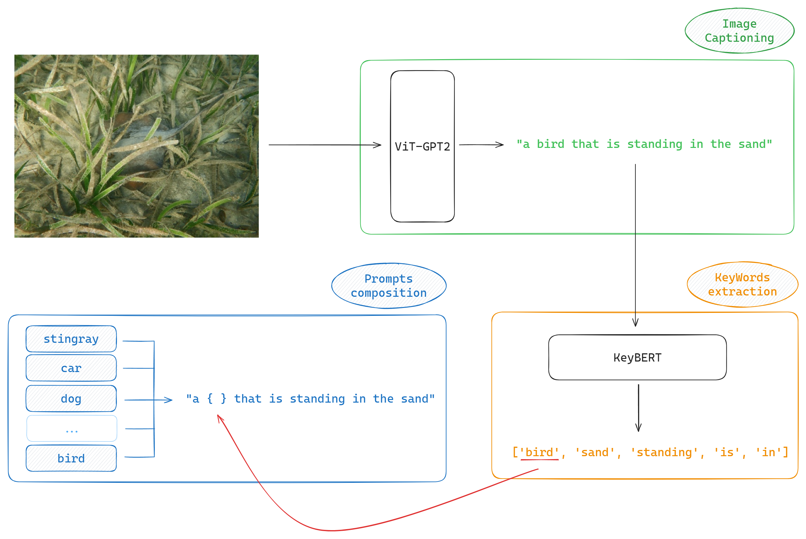

The problem
Test Time Adaptation (TTA) explores the possibility to improve a model's performaces working at test time instead of fine tuning it in a "traditional" way.
That can be a really effective and helpfull practice mostly for 2 reasons:
💥 Fine tuning itself might be not so straight forward.
It really depends on the architecture, but it can be challenging.
💸 Big models require non neglectable computational capacity & data to work with.
(Lots of money).
Our obective is to implement a possible TTA application improving the performances of an image classifier.
Addressing the problem
As backbone we opted for Contrastive Language–Image Pre-training (CLIP), a well known model by OpenAI trained with the contrastive learning paradigma, capable of making zero-shot
classification. CLIP works by learning an association between images and relative captions.

The image & text embedding after training is structured such that an image is going to be close to its relative caption. This opens up lots of possibilities!
If we had a classification task for instance, what we could do (as suggested by OpenAI itself) is :
- Select a set of candidate classes
- For each class define by hand a caption, which might be structured as "a photo of a {class}"
- Plug a query image togheter with all the captions and see if CLIP is able to associate the right caption among all the candidate ones !!!
TTA baseline
A possible TTA solution using CLIP as a backbone is Test-Time Prompt Tuning (TPT).
 What TPT does is basically:
What TPT does is basically:
- Consider one image at time and augment it N times.
- Push the augmented images and the original one through the CLIP image encoder togheter with a set of prompts.
- Compute the entropy of all augmentations + the original and keep the best 10% (minimizing the entropy).
- Average the top 10% distributions obtaining a marginal distribution, so compute again the (marginal) entropy.
| Method | Avg Accuracy (%) | Avg Loss (entropy) |
|---|---|---|
| CLIP-RN50 (zero-shot) | 21.88 | 2.329 |
| TPT (handcrafted prompts) | 28.80 | 1.919 |
| TPT + CoOp | 29.41 | 1.899 |
Exploring image / prompt augmentation alternatives
In order to improve the baseline we've also explored different image augmentation techniques ⭐ :
- PreAugment : applies only random crop to the image
- AugMix : the method used in the original TPT implementation, technique which mixes randomly generated augmentations and uses a Jensen-Shannon loss to enforce consistency
- AutoAugment : a reinforcement learning based method which augment an image according to the one maximizing accuracy (trained on ImageNet)
- DiffusionAugment : uses a diffusion model to generate augmentations
| Augmentation Technique | Avg Accuracy (%) | Avg Loss (entropy) |
|---|---|---|
| PreAugment | 27.51 | 3.02041 |
| AugMix | 28.80 | 1.919 |
| AutoAugment | 30.36 | 1.894 |
| DiffusionAugment | **read ahead** | **read ahead** |
Using AutoAugment we've been able to improve the TPT + CoOp implementation by around 1%, witohut requiring prompt tuning. In the case of DiffusionAugment while testing we've realized it is too much expensive (time wise) to generate images online during evaluation for our hardware. It takes around 12 sec. for the diffusion model we've selected to perform 25 diffusion steps. Moreover, a single augmentation isn't enough to us and even downsampling the number of augmentations to generate from 64 to 10 would still be expensive (2 min. per image times 7500 for ImageNet-A = 250 hours of runtime). A work which tests the effectiveness of diffusion models combined with TPT is DiffTPT, in which they avoid the issue of "online generation" by basically generating offline augmentations and store them apart ready to be used during inference. We consider such solution not really aligned with the goal of TTA as it breaks down the whole principle of improving during inference only. For this reason we stopped experimenting with this solution and didn't report any results (other than the code) related to it.
We've also been testing a prompt augmentation approach proposed by ourselves which aims to create more context-aware prompts compared to the standard, generic descriptions like "a photo of a [class label]." Our hypothesis is that captions specifically tailored to the content of the image will enhance the alignment between the image and the class labels, leading to improved model performance.

- Image Captioning : We use the VisionEncoderDecoderModel (ViT-GPT2) to generate descriptive captions from the images. This model integrates a Vision Transformer (ViT) with GPT-2, allowing it to produce detailed captions that capture the visual content of the images.
- KeyWords Extraction : After generating the caption, we utilize KeyBERT to extract the most relevant keywords or phrases from the caption. These keywords represent the key elements or subjects described in the caption.
- Personalized Prompts composition : We replace the most relevant keyword in the caption with each class label from the dataset to create personalized prompts. This process generates a set of prompts specific to the content of the image and the class labels.
| Method | Avg Accuracy (%) : CLIP-RN50 | Avg Accuracy (%) : CLIP-ViT-B/16 |
|---|---|---|
| Baseline | 21.83 | 47.87 |
| Our Method | 19.41 | 42.13 |
Despite our hypothesis that contextually specific prompts would improve model performance, the results suggest otherwise. The personalized prompts generated by the image captioning system did not achieve better results than the standard approaches.
Our prompt augmentation solution basically delegates the handcrafted prompt design to an image captioner model. Such design can potentially be harmful since :
- Performances are dependent on an secondary supervising model (ViT-GPT2 chain in this case) which is detatched from the rest.
- If the input image is noisy, the produced caption will also probably be noisy, making the inference even harder than using a more generic prompt like "a photo of a { label }"
As we're evaluating performances on an noisy dataset such as ImageNet-A this might be the most relevant aspect - As stated by OpenAI itself, CLIP is very sensitive to wording